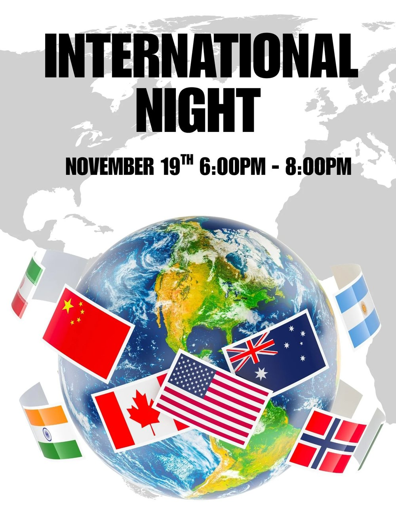

International Night — Thursday, November 19, 2026

The PTA is excited to announce the return of International Night! This is a favorite event for Franklin families and always a lot of fun. Please join us in celebrating the international diversity of our school.
Event Details
- When: Thursday, November 19, 2026, 6:00–8:00 p.m.
- Where: Ben Franklin Elementary
- Admission: FREE
- Table sign-up deadline: Thursday, November 12
Sign Up to Host a Table or Volunteer
Frequently Asked Questions
What is International Night? A free, fun-filled event for the whole family to celebrate the many and varied backgrounds of our students, to teach our students a little about other countries and cultures from around the world, and to provide an opportunity for our families to connect and learn a little about one another.
What does International Night look like? Students and their families typically set up tables to represent their country of origin, and our students and families walk from table to table, sampling food and looking at artifacts, posters, maps, and flags to learn more about that country. There may be art and craft activities, games, etc., depending on what each country's representative decides to do.
Does the PTA provide anything to help me set up a table? The PTA will provide plastic gloves, small plates, small bowls, silverware, napkins, etc., for food items, as well as tables, tablecloths, tape, string, and the like.
I'd like to host a table, but I need help with the expense of providing food or craft supplies. Can you help? Definitely! We don't want the cost of hosting a table to prevent anyone from signing up. Contact Aliya at aliyaq@mybenfranklinpta.org. There are funds available to help with these costs.
When do I need to commit to hosting a table? For our planning purposes, we need to know the number of tables at least a week prior, so by November 12.
I'm hosting a table. Do I need to dress up? Wearing attire representing your country is encouraged but definitely not required.
What if I'm from a country that a lot of other families are from too? We can connect you if you'd like to work together, or you can host your own table. The more the merrier! Just note your preference in the comments when you sign up.
Which countries have been represented in the past? We have had tables from Korea, India, Taiwan, Vietnam, Egypt, France, Iran, China, the Netherlands, Ireland, Australia, Japan, Mexico, Turkey, Russia, Greece, and more. We would love to see as many nations as possible represented this year!
Help Set Up or Take Down
Please consider helping to set up or take down this event — sign up using the button above.